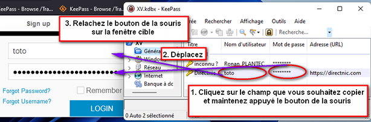

L'utilisation des mots de passe stockés
|
|
L'utilisation des mots de passe stockésComment transférer des mots de passe stockés dans KeePass vers d'autres applications. |

Il existe de nombreuses méthodes différentes pour transférer les mots de passe stockés dans KeePass vers d'autres applications :
 La liste d'entrées principale
La liste d'entrées principale
Selon le champ sur lequel vous double-cliquez dans la liste de l'entrée de la fenêtre principale, différentes actions sont effectuées :
- Le champ Titre : ouvre la boîte de dialogue d'édition d'entrée pour cette entrée.
Si vous maintenez la touche Maj enfoncée tout en double-cliquant, alors le titre est copié dans le presse-papiers à la place. - Le champ Nom d'utilisateur : copie le nom d'utilisateur dans le presse-papiers.
- Le champ Mot de passe : copie le mot de passe dans le presse-papiers.
- Le champ Adresse (URL) : ouvre une URL.
Si vous maintenez la touche Maj enfoncée tout en double-cliquant, alors l'URL est copiée dans le presse-papiers à la place. Ce comportement peut être inversé en activant l'option 'Copier les adresses (URLs) dans le presse-papiers au lieu de les ouvrir'. - Le champ remarques : copie les remarques dans le presse-papiers.
- Le champ Pièces jointes : [1.x] copie dans le presse-papiers, [2.x] s'ouvre dans l'éditeur/la visionneuse interne.
- Les autres champs (comme les champs du temps et l'UUID): copie les contenus de ces champs dans le presse-papiers.
 Glisser&Déposer
Glisser&Déposer
Vous pouvez glisser&déposer tous les champs des entrées de KeePass dans d'autres fenêtres :

 La saisie automatique
La saisie automatique
La saisie automatique est une fonctionnalité puissante qui envoie des pressions de touches simulées vers d'autres applications.
Vous pouvez trouver plus de détails à ce sujet ici : page de documentation de la saisie automatique.
 Les greffons
Les greffons
Il existe de nombreux greffons disponibles qui intègrent KeePass avec d'autres applications.
Vous pouvez trouver ces greffons d'intégration sur la page des greffons.